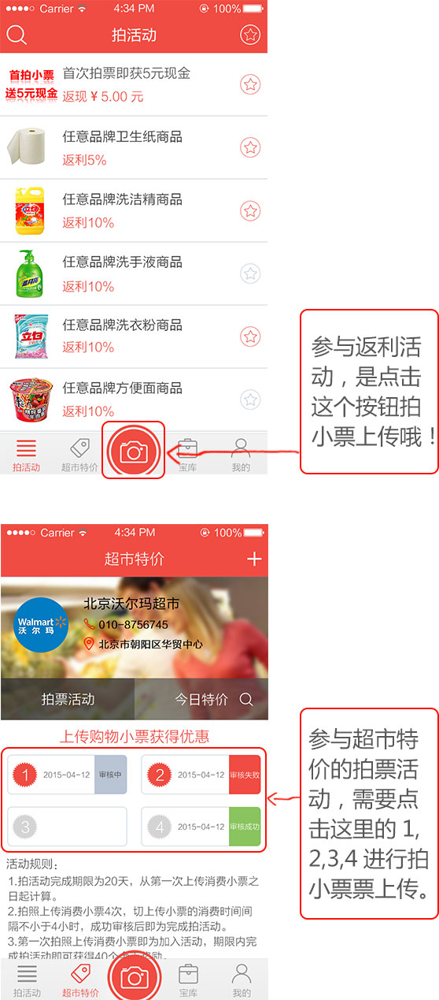

1.超市购物小票上有拍活动的相关商品，拍照上传就可以参加相应返利。
2.分享微信朋友圈的链接每有一个好友点击浏览，即可获得相应的现金奖励。此返利需根据具体品牌活动要求增加，不是每个返利活动都有。
3.邀请好友注册使用。针对部分用户在宝库中会有邀请好友任务活动，需申请加入后才能参与此返利。
《宝库》零钱中可以查看当前返利的余额，点击“提现”按钮，绑定一张您的银行卡即可提现，到账周期为一个工作日，节假日顺延。
1.超市特价中的拍票活动不参与返利。
2.超市特价中的拍票活动是超市的促销活动，是集购物小票给奖励的方式。
